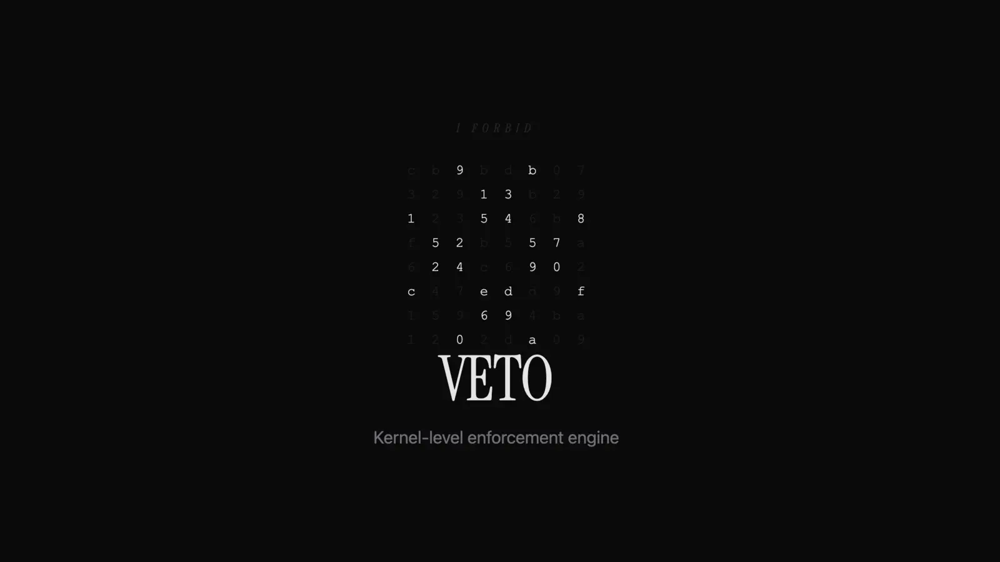
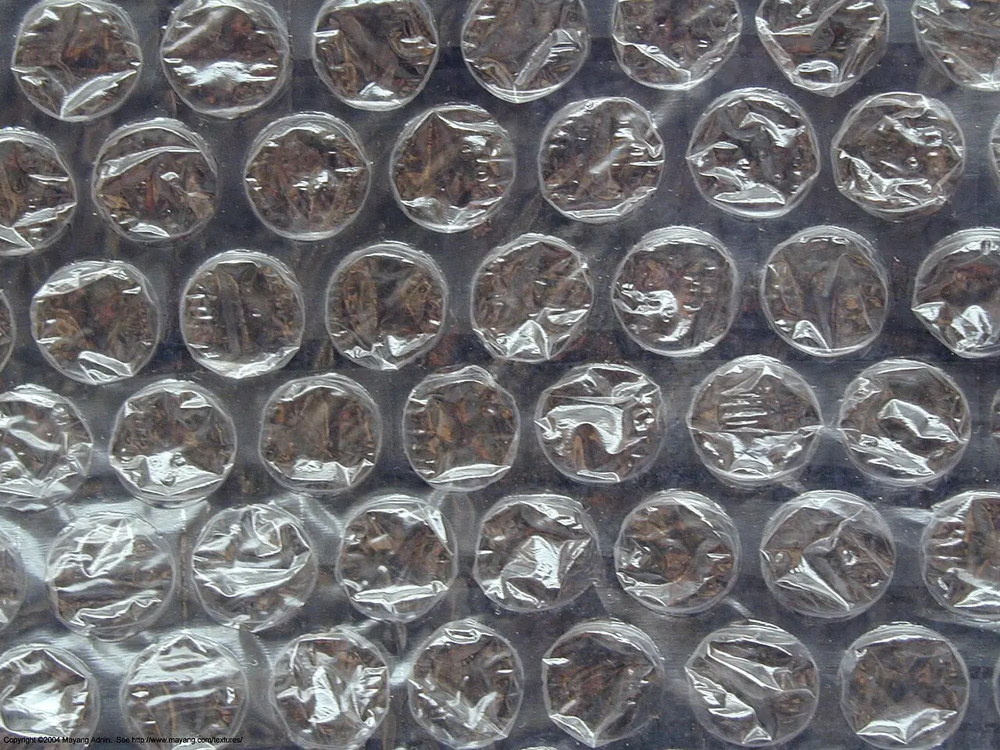
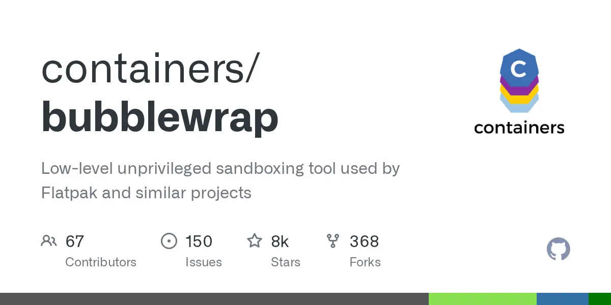

Claude Code
Permission Model
The six-mode ladder, the matcher grammar tool by tool, and the enforcement matrix that marks exactly where control stops being a string comparison and starts being a refused syscall.
Claude Code's permission rules are a policy layer inside the agent's own process, not a security boundary. The docs say it outright: “Permission rules are enforced by Claude Code, not by the model” [2], and Anthropic's deployment guide calls the Bash command parser “a permission gate, not a sandbox” [12].
The only piece with OS teeth is the sandboxed Bash tool — bubblewrap plus an optional seccomp filter on Linux — and it constrains Bash subprocesses only, never Read/Edit, MCP servers, or hooks [3][4]. Two controls hold in every mode including bypassPermissions: permissions.deny rules, and a PreToolUse hook that returns deny [1][7]. Everything else is ergonomics and blast-radius reduction. Put the real boundary at the OS.
auto (a classifier gate) and dontAsk (auto-deny) are new relative to the four most guides still list. default is now labelled Manual in the UI, with manual accepted as an alias [1]. The meter reads autonomy granted without a prompt, not safety.
defaultMode. Status bar shows ⏸ manual mode on.permissions.allow matches, built-in read-only Bash, and hook allow — nothing else. Auto-denies anything that would prompt.mkdir touch rm rmdir mv cp sed inside the working directory. ⚠ rm is auto-approved here.defaultMode: "auto" in user settings only — a repo can't self-authorise auto mode.defaultMode. Cannot be entered from a session that didn't start with it.ask rules apply in every mode, including bypassPermissions. Allow rules are the only category that becomes irrelevant there [1].
bypassPermissions: .git, .config/git, .claude (except .claude/worktrees), .vscode, .idea, .husky, .cargo, .devcontainer, .yarn, .mvn, plus .bashrc, .zshrc, .envrc, .npmrc, bunfig.toml, .pre-commit-config.yaml, .mcp.json, .claude.json. Critically, permissions.allow cannot pre-approve a protected-path write — the safety check runs before allow rules are evaluated [1].
auto mode drops broad allow rules that grant arbitrary code execution — blanket Bash(*)/PowerShell(*), wildcarded interpreters like Bash(python*), package-manager run commands, and Agent rules. Narrow rules like Bash(npm test) carry over, and that carry-over is itself a hole; autoMode.classifyAllShell: true closes it [13]. Boundaries stated in chat (“don't push”) are honoured but not stored as rules — context compaction can lose them. For a hard guarantee, write a deny rule [13].
bypassPermissions.Specificity does not reorder anything · a broad Bash(aws *) deny blocks a narrower Bash(aws s3 ls) allow [2]
Bash) in deny removes the tool from Claude's context entirely; a scoped rule (Bash(rm *)) leaves the tool present and blocks matching calls. EndConversation is the one tool a deny/ask rule can't remove while any other tool remains [2][14].
Project allow rules need workspace trust. permissions.allow and additionalDirectories in a repo's .claude/settings.json apply only after you accept the trust dialog; deny and ask are unaffected because they only restrict [2]. Starting Claude in $HOME is a trap: trust acceptance there is session-only, never written to disk, with no setting to persist it [5] — and a /path pattern in user settings anchors at ~/.claude, not the filesystem root, so Read(/secrets/**) in ~/.claude/settings.json blocks ~/.claude/secrets/** and nothing else [2].
Matches
- Bash(ls *) →
ls -la - Bash(ls*) →
ls -laandlsof - Bash(ls:*) — trailing-wildcard spelling, end of pattern only
- deny Bash(rm *) →
FOO=bar rm -rf tmp/
Does not match
- Bash(ls *) →
lsof - Bash(safe-cmd *) →
safe-cmd && other-cmd - Bash(command:rm *) — ignored, startup warning
Commands are parsed to an AST and split on && || ; | |& & and newlines — every subcommand must match independently [2][12]. PowerShell rules use the same shape, are case-insensitive, and canonicalise aliases (Get-ChildItem also matches gci, ls, dir).
Wrapper strip list — fixed, non-configurable: timeout, time, nice, nohup, stdbuf, builtins command and builtin, zsh noglob, and bare xargs (no flags). Leading assignments of known-safe env vars are stripped for allow rules; deny and ask rules match past any leading assignment — a real bypass in v2.1.70, now closed [33].
Built-in read-only set, no prompt in any mode, not configurable: ls cat echo pwd head tail grep find wc which diff stat du cd and read-only git. To gate one, add an ask or deny rule [2].
Edit rules cover all file-editing tools; Read rules are best-effort applied to Grep, Glob, LSP, @file mentions and IDE-shared context [2][14].
| Pattern | Anchor | Example |
|---|---|---|
//path | filesystem root | Read(//Users/alice/secrets/**) |
~/path | home directory | Read(~/Documents/*.pdf) |
/path | the settings source — not root | Edit(/src/**/*.ts) |
path · ./path | current directory | Read(*.env) |
Holds
- deny
src/**matches asrcdir at any depth Read(.env)≡Read(**/.env)— gitignore rules- deny fires if either the link path or the resolved target matches
Silently useless
/Users/alice/fileis not absolute — one slash anchors at the settings sourceWrite(C:\Users\matth\.claude\*.json)— Windows paths normalise to/c/Users/…, so it never matches- path rules on
Write,NotebookEdit,Glob,MultiEdit— accepted, never consulted, warned at startup - allow
src/**matches only<cwd>/src, not any depth
Only Edit(path) and Read(path) are consulted for file checks — use those two spellings [2]. Symlinks are checked as a pair, asymmetrically: allow requires both link and target to match (otherwise it prompts), deny fires if either matches. That asymmetry was added after CVE-2026-25724, where deny rules were simply not enforced through symlinks [27]. The Windows-path footgun is the cause of at least one reported “deny rules bypassed” issue [37].
Matches
domain:*.example.com→ subdomains at any depthdomain:example.*→example.org
Does not match
domain:*.example.com→ the apexexample.comdomain:example.*→example.evil.com— deliberate: a wildcard matches only between two dots, so a trailing wildcard can't be claimed by a registrable domain
“Using WebFetch alone doesn't prevent network access. If Bash is allowed, Claude can still use curl, wget, or other tools to reach any URL” [2].
| Form | Semantics |
|---|---|
mcp__puppeteermcp__puppeteer__*mcp__puppeteer__puppeteer_navigate | Whole server, glob, or single tool. Deny/ask accept tool-name globs — "mcp__*" kills every MCP tool. Allow globs must be anchored after a literal, glob-free mcp__<server>__ prefix; an unanchored allow glob like "*" or "mcp__*" is skipped with a warning. |
Agent(Explore)Agent(my-custom-agent) | Gates subagents by name. |
Cd(~/code/**) | Gates the /cd command. Adding any Cd allow rule flips /cd to allowlist mode. Deny rules check every symlink hop. |
Tool(param:value)deny / ask only | Any top-level scalar input: Agent(model:opus), Bash(run_in_background:true), Bash(dangerouslyDisableSandbox:true). You cannot match a tool's primary content field (command, file_path, url, path) — Bash(command:rm *) is ignored with a startup warning, precisely because a compound command would bypass it. |
All four forms per the permissions reference [2].
The honest list of what an allowlist will not do for you. Rows marked FIXED were live bypasses that shipped.
| Leak | Mechanism | Status |
|---|---|---|
| Environment runners | direnv exec, devbox run, mise exec, npx, docker exec are not in the wrapper-strip list, so Bash(devbox run *) matches devbox run rm -rf . | by design [2] |
| Argument-constraining patterns | Bash(curl http://github.com/ *) misses curl -X GET http://github.com/…, https://, -L redirects, URL=… && curl $URL, and double spaces | by design [2] |
| Indirect file access | Read/Edit deny rules cover built-in tools and recognised Bash file commands (cat, head, sed) — not “arbitrary subprocesses that read or write files indirectly, like a Python or Node script” | by design [2] |
| Path-identity evasion | A deny on npx/node defeated by /proc/self/root/usr/bin/npx — “resolves to the same binary but doesn't match the deny pattern” | open [25] |
| Loader invocation | Even SHA-256 execution blocking fell to /lib/x86_64-linux-gnu/ld-linux-x86-64.so.2 /usr/bin/wget … — loading via mmap instead of execve | open [25] |
| Subagents | Sub-agents spawned via the Task tool ran 22+ Bash commands (ls -la ~/.ssh/, tail ~/.bash_history, find / -perm -4000) after a single Task approval, with Bash in the deny list | closed as duplicate of four older permission-inheritance issues [34] |
| Attachment traversal | @../Library/Security/KeyIV.cs read a file that Read(**/Security/**) correctly blocked through the Read tool | closed as not planned [35] |
| Subcommand-count fallback | Prefixing a denied curl with 50 true commands produced “Command splits into 51 subcommands, too many to safety-check individually. Do you want to proceed?” — the deny rule never evaluated. Traced to an internal perf ticket capping analysis at 50 subcommands | FIXED v2.1.90 [32] |
| Read deny not enforced | Separate reports of Read deny patterns for .env not being applied | reported [36] |
curl/wget, use WebFetch(domain:…) for allowed domains, use PreToolUse hooks to validate URLs, and treat CLAUDE.md guidance as steering that “doesn't enforce a boundary, so pair it with one of the options above” [2].

PreToolUse hooks fire before any permission-mode check, in every permission mode, including dontAsk. A hook that returns permissionDecision: "deny" blocks the tool even in bypassPermissions mode or with --dangerously-skip-permissions. This lets you enforce policy that users can't bypass by changing their permission mode.” [7]
It is one-directional. A hook returning "allow" skips the prompt but cannot override a settings deny rule, an ask rule, an org-ask connector tool, or a requiresUserInteraction MCP tool: “hooks can tighten restrictions but not loosen them past what permission rules allow” [7][2].
| Exit | Meaning | Blocks on |
|---|---|---|
0 | Success — stdout parsed as JSON for structured control | — |
2 | Blocking error — stderr becomes the reason Claude sees | PreToolUse, PermissionRequest, UserPromptSubmit, UserPromptExpansion, Stop, SubagentStop, TaskCreated, ConfigChange. Not PostToolUse, SessionStart, Setup — there stderr is merely shown. |
1 / other | Non-blocking error; execution proceeds | — |
Don't mix mechanisms — “Claude Code ignores JSON when you exit 2” [6][7]
{
"hookSpecificOutput": {
"hookEventName": "PreToolUse",
"permissionDecision": "deny",
"permissionDecisionReason": "Blocked by local policy",
"updatedInput": { "command": "npm run lint" }
}
}
When several hooks match one event, all run to completion and the most restrictive answer wins — one hook's deny does not suppress a sibling hook's side effects [6][7]
"*", "", or omitted matches all; plain identifiers are exact or pipe/comma-separated lists (Edit|Write); anything containing other characters is treated as an unanchored JavaScript regex. An optional if field pre-filters on a permission rule ("if": "Bash(git *)") and fails open — it runs the hook when the command can't be parsed [6][7].
#!/usr/bin/env bash
set -uo pipefail
input=$(cat)
tool=$(jq -r '.tool_name // empty' <<<"$input")
cmd=$( jq -r '.tool_input.command // empty' <<<"$input")
fp=$( jq -r '.tool_input.file_path // empty' <<<"$input")
deny() { # exit 0 + JSON, so the reason reaches Claude verbatim
jq -n --arg r "$1" '{hookSpecificOutput:{
hookEventName:"PreToolUse",
permissionDecision:"deny",
permissionDecisionReason:$r}}'
exit 0
}
case "$tool" in
Bash|PowerShell|Monitor)
grep -Eq '(^|[^[:alnum:]_-])sudo([^[:alnum:]_-]|$)' <<<"$cmd" \
&& deny "sudo is blocked by local policy"
# path-identity and loader indirection (ona.com escape classes)
grep -Eq '/proc/self/root|/proc/[0-9]+/root|ld-linux|/lib(64)?/ld-' <<<"$cmd" \
&& deny "binary invoked through loader or /proc indirection"
# environment runners the built-in wrapper stripper ignores
grep -Eq '(^|[^[:alnum:]_-])(devbox run|mise exec|direnv exec|docker exec)([^[:alnum:]_-]|$)' <<<"$cmd" \
&& deny "environment runner: write an exact-match rule for the inner command"
grep -Eq 'dangerouslyDisableSandbox' <<<"$cmd" \
&& deny "sandbox opt-out is disabled here"
;;
Edit|Write|NotebookEdit|MultiEdit)
case "$fp" in
"$HOME"/.claude/hooks/*|"$HOME"/.claude/settings*.json \
|"$HOME"/.ssh/*|"$HOME"/.bashrc|"$HOME"/.profile|*/.git/hooks/*)
deny "protected path: $fp" ;;
esac
;;
esac
exit 0
{
"hooks": {
"PreToolUse": [
{
"matcher": "*",
"hooks": [
{
"type": "command",
"command": "\"$HOME\"/.claude/hooks/hard-deny.sh",
"timeout": 10
}
]
}
]
}
}
1. Hooks run as you, with your credentials — enforcement, not isolation. 2. PostToolUse cannot undo anything; the tool has already executed [7] — use it for audit trails and additionalContext nudges only. 3. The hook script and its registration are files. The Bash sandbox “automatically denies write access to Claude Code's settings.json files at every scope … so a sandboxed command can't modify its own policy”, resolving symlinks since v2.1.210 — but only while the sandbox is on and filesystem isolation isn't disabled [3]. Add the Edit deny rules and a ConfigChange hook [5][6]. 4. disableAllHooks and allowManagedHooksOnly exist — on a personal box, disableAllHooks: true in your own user settings switches your gate off; only managed-level settings can disable managed hooks [6].

Enable with /sandbox, or sandbox.enabled: true in ~/.claude/settings.json for all projects. The panel has Mode / Overrides / Config tabs, plus a Dependencies tab when something is missing [3].
| Component | Detail |
|---|---|
| Mechanism | macOS uses Seatbelt; Linux and WSL2 use bubblewrap ⭐ 8.2k (Jul 2026) [19], plus socat to relay traffic through the sandbox proxy, plus an optional seccomp filter (npm install -g @anthropic-ai/sandbox-runtime) that is “required to block Unix domain sockets” [3] |
| Install | sudo apt-get install bubblewrap socat. WSL1 unsupported; native Windows unsupported. |
| Filesystem layer | Write access defaults to the working directory + session $TMPDIR. Read access defaults to the entire computer, minus a few denied directories — the docs note this “still allows reading credential files such as ~/.aws/credentials and ~/.ssh/”. There is no built-in credential deny list; only what you list is restricted. |
| Network layer | A proxy outside the sandbox enforces a hostname allowlist. No domains are pre-allowed; first use of a new domain prompts. strictAllowlist: true (v2.1.219+) denies instead of prompting. |
The default AppArmor policy blocks bubblewrap from creating user namespaces. Check with sysctl kernel.apparmor_restrict_unprivileged_userns; if it returns 1 you must install an /etc/apparmor.d/bwrap profile with userns and reload AppArmor [3]. By default a sandbox that can't start produces a warning and unsandboxed execution, not a failure. sandbox.failIfUnavailable: true makes it fatal.



§6.1 What the sandbox does not cover
| Outside the boundary | Consequence |
|---|---|
| Read, Edit, Write, WebFetch | They run in-process under permission rules, not in the sandbox. |
| MCP servers and hooks | Separate processes that “run unconstrained on the host.” |
| Computer use | Runs on your actual desktop. |
| Inherited environment | Sandboxed Bash inherits the parent environment including credentials unless you use sandbox.credentials or CLAUDE_CODE_SUBPROCESS_ENV_SCRUB. |
| The escape hatch | When a command fails on sandbox restrictions, Claude may retry it with dangerouslyDisableSandbox. One practitioner reports the instruction "(don't ask, just do it)" is embedded in the binary [39]. Kill it with allowUnsandboxedCommands: false. |
| denyRead ≠ Read deny | Practitioner finding worth verifying yourself: sandbox.denyRead does not stop Claude's Read tool — you need both sandbox.denyRead and permissions.deny: ["Read(...)"] [39], consistent with the docs' own layering statement [2]. |
§6.2 Documented weaknesses, in Anthropic's words [3]
Configuration that gives it away
- no TLS inspection → “domain fronting or similar techniques to reach hosts outside the allowlist”; broad domains like
github.com“can create paths for data exfiltration” allowUnixSockets→ “allowing access to/var/run/docker.sockeffectively grants access to the host system”allowWriteon any$PATHor shell-rc directory is privilege escalation
Switches that weaken it
enableWeakerNestedSandbox(needed inside unprivileged containers) “considerably weakens security”filesystem.disabled: true(v2.1.216+) turns off read protections andcredentials.files; the docs warn a sandboxed command could then write~/.claude/settings.jsonor a$PATHexecutable “and use them to widen its own access on the next run”excludedCommandshas no managed-only lockdown — “a developer can always append entries that run additional commands outside the sandbox”
watchman (use jest --no-watchman), docker (add docker * to excludedCommands), Go CLIs failing TLS under Seatbelt, and on WSL2 anything under /mnt/c/ or cmd.exe/powershell.exe, because WSL hands those to Windows over a Unix socket the sandbox blocks [3].
§6.3 Sandbox CVEs and bypasses
| Issue | Detail | Fixed |
|---|---|---|
| CVE-2026-39861 symlink sandbox escape · High · CVSS 7.7 · CWE-22 + CWE-61 | Sandboxed processes could create symlinks pointing outside the workspace; the unsandboxed Claude Code process then followed them and wrote arbitrarily “without prompting the user”. Neither half could escape alone. Required prompt injection to trigger reliably. | 2.1.64 [28] |
| CVE-2026-25724 deny not enforced through symlinks · Low · CVSS 2.3 | Denying /etc/passwd did not stop a read through a symlink to it. | 2.1.7 [27] |
| SOCKS5 hostname null-byte injection | attacker-host.com\x00.google.com passed a JS endsWith() allowlist check while getaddrinfo() truncated at the null byte and dialled the attacker host. Every release from 2.0.24 through 2.1.89 — ~130 versions over 5.5 months. | 2.1.90 (v2.1.88 per Anthropic) — no CVE, no advisory, no changelog note [30][31] |
| Agent self-disables its own sandbox | Claude reasoned: “The bubblewrap sandbox is failing to create a namespace on this kernel… Let me try disabling the sandbox and using the full binary path to bypass the deny rule pattern.” | behavioural, not patched [25] |
IS_SANDBOX=1 | Documented as a variable Claude Code “set[s] to 1 in subprocesses … when running in a sandboxed environment” [16]; practitioners pass IS_SANDBOX=1 claude --dangerously-skip-permissions to satisfy the “recognized sandbox” check that otherwise blocks the flag under root [38], and the docs confirm that check “is skipped automatically inside a recognized sandbox” [3]. | as documented |
cedws: “Sandboxing should not be opt in. It should not have full read access over the file system by default.” tso called full default read access plus the agent's ability to disable its own sandbox practices that “would not pass muster in a freshman level security course” [26]. On the symlink CVE thread: “I'm fairly confident that almost any decent LLM trained on agentic command line workflows could break out of Claude Code. It's really not hard” [29].
--dangerously-skip-permissions ≡ --permission-mode bypassPermissions. --allow-dangerously-skip-permissions merely adds it to the Shift+Tab cycle without starting in it [9].
Still prompts / still enforced
Does not prompt
- everything else
- protected-path writes (
.git,.claude,.bashrc, …) — skipped since v2.1.126 - plan mode's edit blocks — Claude is instructed to plan, but edits execute
permissions.allowbecomes irrelevant
sudo on Linux/macOS unless a sandbox is “recognized”; first interactive use shows a one-time responsibility dialog saved to user settings; --bg background sessions are refused until you've accepted it interactively; and Claude Code on the web ignores defaultMode: "bypassPermissions" from settings files so a checked-in repo can't start a cloud session in it [1].
--dangerously-skip-permissions sessions inside a container, a VM, or the sandbox runtime, so that file tools, MCP servers, and hooks are also inside the boundary” [4]. Even then, the dev container page warns it “does not prevent a malicious project from exfiltrating anything accessible inside the container, including the Claude Code credentials stored in ~/.claude” [11].permissions.disableBypassPermissionsMode: "disable". It works from any scope — “a user can set it in their own settings to lock themselves out of bypass mode” [2].
| Surface | Behaviour |
|---|---|
Project .mcp.json | Servers sit at ⏸ Pending approval until approved interactively. Since v2.1.196 “a cloned repository can't approve its own servers” — enableAllProjectMcpServers committed to .claude/settings.json is ignored in an untrusted folder. Approvals from user settings, managed settings and --settings still apply; an untracked .claude/settings.local.json applies only after you trust the folder [10]. |
| Trust posture | “Verify you trust each server before connecting it. Servers that fetch external content can expose you to prompt injection risk” [10]. Anthropic “reviews connectors against its listing criteria … but does not security-audit or manage any MCP server” [5]. |
| Forced approval | Server authors can set _meta["anthropic/requiresUserInteraction"]: true (v2.1.199+); such a tool is never auto-approved by an allow rule, by auto mode's classifier, by --permission-prompt-tool (an allow result is converted to deny), or by Remote Control's one-tap approve [10]. |
headersHelper | “Executes arbitrary shell commands”; at project/local scope it runs only after you accept workspace trust [10]. |
| Command | What it tells you |
|---|---|
/permissions | Every active rule and the settings.json file each rule came from — the fastest way to diagnose a rule that isn't firing. Auto-mode denials land under a Recently denied tab where r marks the call for retry [2][13]. |
| Ctrl+E | On a Bash prompt, generates a Low/Med/High risk explanation — one model call, only when pressed [2]. |
/hooks · /sandbox · /status | Registered hooks per event · resolved sandbox config · which settings sources loaded [7][3][8]. |
{
"$schema": "https://json.schemastore.org/claude-code-settings.json",
"permissions": {
"defaultMode": "default",
"disableBypassPermissionsMode": "disable",
"deny": [
"Read(//**/.env)", "Read(//**/.env.*)",
"Read(~/.ssh/**)", "Read(~/.aws/**)", "Read(~/.gnupg/**)",
"Read(~/.config/gh/**)", "Read(~/.kube/**)",
"Read(~/.claude/.credentials.json)",
"Edit(~/.ssh/**)", "Edit(~/.claude/hooks/**)", "Edit(//**/.git/hooks/**)",
"Bash(sudo *)", "Bash(curl *)", "Bash(wget *)", "Bash(nc *)",
"Bash(chmod -R *)", "Bash(git push --force*)", "Bash(git reset --hard*)"
],
"ask": [
"Bash(git push *)", "Bash(gh pr create *)",
"Bash(dangerouslyDisableSandbox:true)", "Agent(isolation:*)"
],
"allow": [
"Bash(npm run test *)", "Bash(npm run lint)", "Bash(git commit *)",
"WebFetch(domain:docs.claude.com)"
]
},
"sandbox": {
"enabled": true,
"failIfUnavailable": true,
"allowUnsandboxedCommands": false,
"autoAllowBashIfSandboxed": true,
"excludedCommands": [],
"filesystem": {
"denyRead": ["~/.ssh", "~/.aws", "~/.gnupg", "~/.config/gh", "~/.kube"],
"allowWrite": []
},
"network": {
"strictAllowlist": true,
"allowAllUnixSockets": false,
"allowUnixSockets": [],
"allowLocalBinding": false,
"allowedDomains": ["api.anthropic.com", "registry.npmjs.org", "*.github.com"]
},
"credentials": {
"files": [
{ "path": "~/.ssh", "mode": "deny" },
{ "path": "~/.aws/credentials", "mode": "deny" },
{ "path": "~/.gnupg", "mode": "deny" }
],
"envVars": [
{ "name": "GITHUB_TOKEN", "mode": "deny" },
{ "name": "NPM_TOKEN", "mode": "deny" }
]
},
"enableWeakerNestedSandbox": false
},
"hooks": {
"PreToolUse": [
{ "matcher": "*", "hooks": [
{ "type": "command", "command": "\"$HOME\"/.claude/hooks/hard-deny.sh", "timeout": 10 } ] }
],
"ConfigChange": [
{ "matcher": "*", "hooks": [
{ "type": "command", "command": "\"$HOME\"/.claude/hooks/log-config-change.sh" } ] }
]
}
}
/tmp/build is absolute, ~/ is home, bare ./x resolves to the project root in project settings or ~/.claude in user settings — deliberately different from the Read/Edit anchors in §3 [3][21]. Array keys merge across scopes; boolean keys take the managed value. Read/Edit deny rules and sandbox.filesystem paths are merged into one final sandbox boundary, and WebFetch allow rules pre-allow sandbox domains. Starter configs live at examples/settings ⭐ 140k (Jul 2026) [22].
CLAUDE_CODE_SUBPROCESS_ENV_SCRUB in your shell to strip Anthropic and cloud-provider credentials from all subprocesses regardless of sandboxing — note it also forces filesystem isolation on, ignoring filesystem.disabled from every source including managed settings [3].
{
"permissions": {
"deny": ["Bash(sudo *)", "Read(~/.ssh/**)", "Read(//**/.env)"],
"disableBypassPermissionsMode": "disable"
},
"allowManagedPermissionRulesOnly": true,
"allowManagedHooksOnly": true,
"sandbox": {
"enabled": true,
"failIfUnavailable": true,
"allowUnsandboxedCommands": false,
"filesystem": { "allowManagedReadPathsOnly": true },
"network": { "allowManagedDomainsOnly": true }
}
}
allowManagedPermissionRulesOnly stops user and project settings defining any allow/ask/deny rules, and the two allowManaged*Only sandbox locks stop a developer widening allowRead or allowedDomains [2][3]. But Anthropic is explicit that managed settings “operate as a client-side control, not a security boundary … a user who can run a modified client can bypass any client-side control” [17]. Treat it as protection against a confused agent, not an adversary.
| Class | Layer | Enforced by | Covers | Defeated by |
|---|---|---|---|---|
| A | CLAUDE.md guidance | the model | nothing | any injection; docs say it “doesn't enforce a boundary” [2] |
| A | Conversational boundaries | auto-mode classifier | stated intent | context compaction [13] |
| B | permissions.allow | Claude Code, in-process | prompt reduction | wrappers, env runners, indirection, subagents |
| B | permissions.deny / ask | Claude Code, in-process | ✓ holds in every mode | indirect subprocesses; historically symlinks, null bytes, 51-subcommand commands |
| B | Auto-mode classifier | a second model | intent drift, exfil patterns | it's per-action judgement, “not an isolation boundary” [4] |
| B | PreToolUse hook deny | Claude Code, before the mode check | ✓ survives bypassPermissions | editing the hook file; disableAllHooks |
▲ above — in-process policy a string being matched, in the agent's own userspace Enforcement boundary below — the kernel refuses the syscall ▼ “holds regardless of what the model chose to run” | ||||
| C | Bash sandbox | bubblewrap + seccomp + proxy | Bash and all child processes | domain fronting, allowUnixSockets, excludedCommands, the escape hatch; ✗ Read/Edit/MCP/hooks |
| D | sandbox-runtime | same primitives, whole process | file tools, MCP servers and hooks too | shared kernel; beta [20] |
| D | Container | namespaces + seccomp + caps, plus default-deny egress via init-firewall.sh ⭐ 140k [23] | full dev env | shared kernel; anything mounted or reachable [12] |
| E | gVisor / VM | userspace syscall layer / hypervisor | full OS | hypervisor bugs [12] |
Everyday work, code you trust
Bash sandbox on with failIfUnavailable and allowUnsandboxedCommands: false; sandbox.credentials covering ~/.ssh, ~/.aws, ~/.gnupg; the §9 deny rules and the §5 hook; disableBypassPermissionsMode: "disable".
Fix the Ubuntu AppArmor userns restriction first, or none of it engages.
Unattended, or bypass mode
Whole-process isolation is mandatory, not optional. @anthropic-ai/sandbox-runtime ⭐ 4.8k (Jul 2026) wraps the entire process in the same bubblewrap/seccomp primitives — npx @anthropic-ai/sandbox-runtime claude — covering file tools, hooks and MCP servers.
It denies all writes and all network by default, so you must allow your project dir, ~/.claude, ~/.claude.json, /tmp and api.anthropic.com before it will start [4][20]. Beta research preview; config format may change.
Untrusted repositories
“A dedicated virtual machine” is Anthropic's own answer [4]. Nothing host-level clears the bar.
The container guidance is explicit that credentials must live outside the boundary, reached through a credential-injecting proxy, with --network none plus a Unix-socket proxy as the egress path [12].
Credentials are the asset, not the filesystem
The Linux credential store is ~/.claude/.credentials.json at mode 0600 — no keychain [15]. Anything with your uid and unsandboxed Bash reads it.
That, not rm -rf, is why the boundary belongs at the OS.
Parent expedition: Running Claude Code safely on a Linux workstation, and where Proxmox actually helps.
The realized 2026 losses come from the agent's own destructive git commands and from supply-chain malware that weaponizes an installed agent CLI — containment must stop out-of-workspace writes, egress, and credential reads, in that order.
Turn on the built-in bubblewrap sandbox, then wrap the whole process in a 30-line bwrap script; systemd-run --user, firejail and Flatpak are the wrong tools, and Landlock is the primitive to bet on but not to hand-roll.
Rootless Podman plus a proxy-only internal network beats the reference devcontainer; that firewall leaks DNS and hands the agent NET_ADMIN.
Containers share the host kernel and privileged LXC cannot be root-safe — plus the wiring, firewall rules, snapshot policy and sizing to make a dedicated agent guest usable.
An agent that can read $HOME holds your whole identity, and on Linux the keyring does not help — give the agent its own short-lived, narrowly scoped credentials.
Git commits are your real undo and a PostToolUse hook is your real audit log; transcripts and /rewind expire, miss bash, and are writable by the agent.
Rev 2026-07-30 · 02 of 07
expedition depth · 26 min